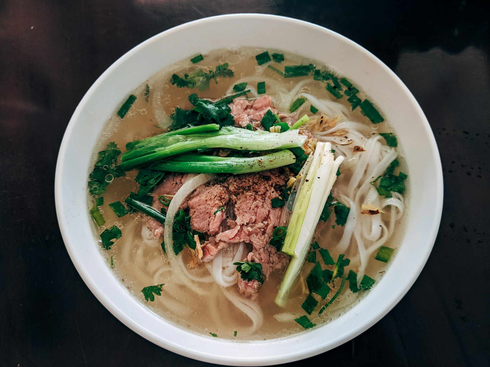

Phở
- Beef pho (phở tái)
- Beef and meatball pho
- Combination pho (phở đặc biệt)
- Chicken pho (phở gà)
- Shrimp pho (phở tôm)
- Vegetable pho (phở chay)
Phở · Wilmington
A bowl of pho, a vermicelli bowl, or a banh mi — Vietnamese cooking on Market Street.
Call (910) 833-7204 Directions
Pho Cafe is a Vietnamese restaurant at 3926 Market Street, Suite 201, in Wilmington. Public listings place it in the pho-restaurant category and show a steady lunch-and-dinner schedule later in the week.
This sample page gathers publicly listed dishes so a visitor can see the kind of cooking on offer — bowls of pho, other noodle soups, vermicelli, and banh mi — then call or stop in for what is being served that day.
Monday – TuesdayClosed
Wednesday – Sunday11:00 a.m. – 9:00 p.m.
Hours as listed on Google as of November 2026. Please call to confirm.
3926 Market St #201
Wilmington, NC 28403
3926 Market St #201Wilmington, NC 28403
Google rating, based on 984 reviews, as of November 2026. Individual review quotes are not shown on this sample page.